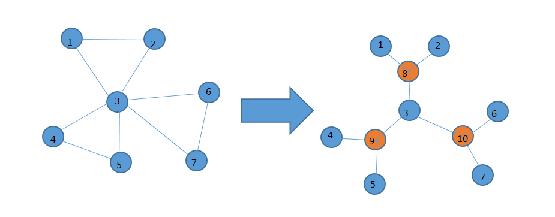

codeforces 478E tourist
题目链接
题目描述
There are n cities in Cyberland, numbered from 1 to n, connected by m bidirectional roads. The j-th road connects city aj and bj.
For tourists, souvenirs are sold in every city of Cyberland. In particular, city i sell it at a price of wi.
Now there are q queries for you to handle. There are two types of queries:
“C a w”: The price in city a is changed to w.
“A a b”: Now a tourist will travel from city a to b. He will choose a route, he also doesn’t want to visit a city twice. He will buy souvenirs at the city where the souvenirs are the cheapest (possibly exactly at city a or b). You should output the minimum possible price that he can buy the souvenirs during his travel.
More formally, we can define routes as follow:
A route is a sequence of cities [x1, x2, …, xk], where k is a certain positive integer.
For any 1 ≤ i < j ≤ k, xi ≠ xj.
For any 1 ≤ i < k, there is a road connecting xi and xi + 1.
The minimum price of the route is min(wx1, wx2, …, wxk).
The required answer is the minimum value of the minimum prices of all valid routes from a to b.
Input
The first line of input contains three integers n, m, q (1 ≤ n, m, q ≤ 105), separated by a single space.
Next n lines contain integers wi (1 ≤ wi ≤ 109).
Next m lines contain pairs of space-separated integers aj and bj (1 ≤ aj, bj ≤ n, aj ≠ bj).
It is guaranteed that there is at most one road connecting the same pair of cities. There is always at least one valid route between any two cities.
Next q lines each describe a query. The format is “C a w” or “A a b” (1 ≤ a, b ≤ n, 1 ≤ w ≤ 109).
Output
For each query of type “A”, output the corresponding answer.
Examples
input
3 3 3
1
2
3
1 2
2 3
1 3
A 2 3
C 1 5
A 2 3
output
1
2
input
7 9 4
1
2
3
4
5
6
7
1 2
2 5
1 5
2 3
3 4
2 4
5 6
6 7
5 7
A 2 3
A 6 4
A 6 7
A 3 3
output
2
1
5
3
Note
For the second sample, an optimal routes are:
From 2 to 3 it is [2, 3].
From 6 to 4 it is [6, 5, 1, 2, 4].
From 6 to 7 it is [6, 5, 7].
From 3 to 3 it is [3].
题解
中文题目在uoj上有。
我们考虑分析这个题的性质，一个点走过就不能再走了，我们可以想象成将这个点删去。于是我们可以联想的割顶，应为一旦经过了割顶就再也走不回去了。如果我们将整个图求出点双联通分量，可以想象一条路径一定是一次经过一些双联通分量并且不回头。同时在一个双联通分量中一个点到另一个点的路径是可以经过双联通分量中的任意一个点的。这似乎提示我们可以缩点后在树上维护。标程的构树方法很巧妙。他将双联通分量缩成一个点，这个点代表双联通分量中除dfs序最小的那个割顶外的所有点，它的权值为它所代表的点的权值最小值，并与这个连通分量的所以点连边(在新图中连边)。这种连边方式保证了每个点只属于一个双联通分量。这样会得到一颗树，如下图。

这样询问两点间了路径时我们可以直接在树上剖分做。但会有一个问题比如：上图中询问4到5的路径时，树上路径是没有包括3的，因为3为该双连通分量dfs序最小的割顶。但我们发现这种情况只会出现在两点的lca代表着一个双联通分量时，并且未包含的点一定是lca的父亲。这种情况就单独提出来判判就好了。
1 |
|